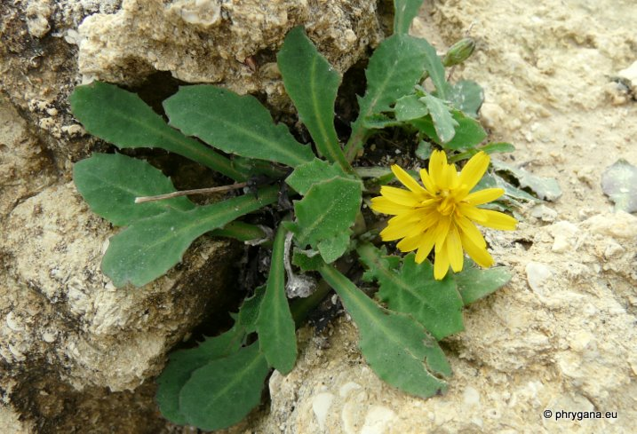
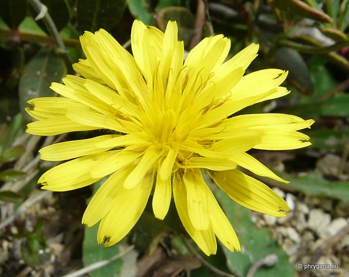
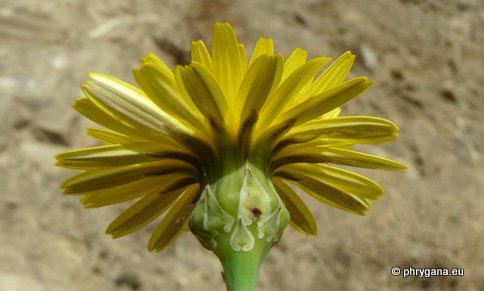
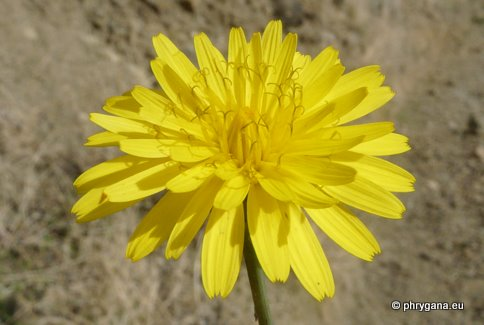
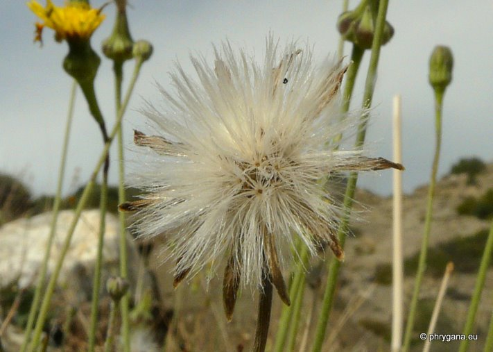
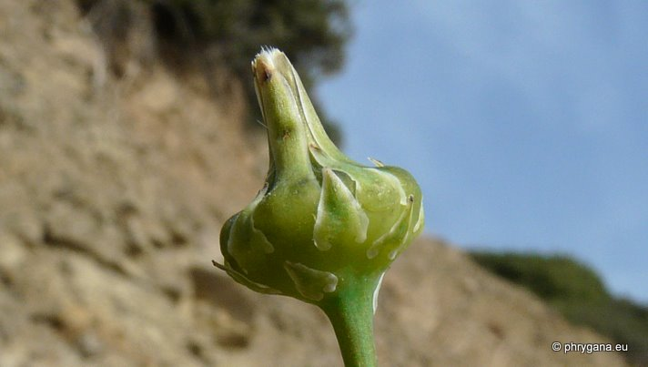
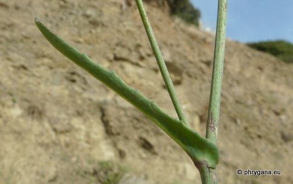
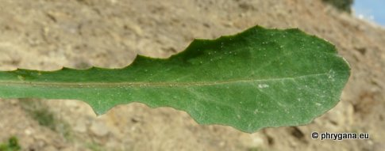
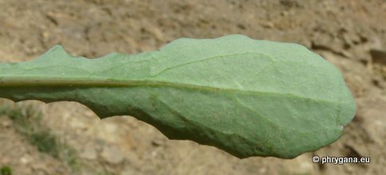
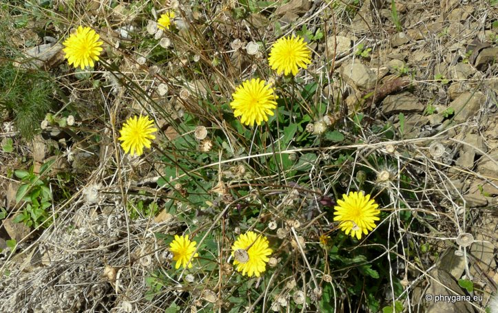

| PHRYGANA | Fauna | Flora | Galles | liste des espèces |
contact -
info - commentaires phrygana1 (at) gmail.com |
| Particularités crétoises | nouveautés | Mines | ressources naturelles |
| Reichardia picroides (L.) ROTH |
| 277 | Flora | ASTERACEAE | Chicorieae CASS. | Reichardia ROTH |
|
 Reichardia picroides Matala 19 décembre 2010 |
| Synonyme: Thrincia tuberosa (L.) DC. | |
| fr: la Reichardie en: Reichardia gr: Γαλατσίδα | |
|
|
|
| Plante glabre, vert glauque, ramifiée | |
| Feuilles: feuilles basilaires pennatifides; feuilles caulinaires embrassantes, à larges oreillettes, lancéolées, entières ou parfois dentées | |
| Fleurs: capitule solitaire sur un long pédoncule, écailleux au sommet; fleurs ligulées jaunes; étamines jaunes, à grains de pollen jaunes; style jaune; involucre enflé. | |
| Fruits: akènes du pourtour du capitule rugueux; akènes intérieur lisses | |
| Hauteur: 10 - 45 cm | Type biologique: thérophyte -- hémicryptophyte à rosette |
| Floraison: octobre novembre décembre janvier février mars avril | |
| Altitudes: 1 – 1100 m | |
| Statut en Crète: indigène | |
| Biotopes en Crète: phrygana, olivaies, bords des routes, falaises, collines sèches, dunes maritimes. | |
| Distribution: région Méditerranéenne | |
| Note: plante mellifère | |
| Usage culinaire : en Crète, les jeunes feuilles sont consommées crues ou bouillies et consommées en épinards | |
|
 Reichardia picroides Matala 19 décembre 2010 |
|

 Reichardia picroides Melambes (Agios Giorgos) 26 décembre 2010 |
|
 Reichardia picroides Louros plage 28 novembre 2010 |
|
 Reichardia picroides Melambes (Agios Giorgos) 26 décembre 2010 |
|

Reichardia picroides Melambes (Agios Giorgos) 26 décembre 2010 |
|

 Reichardia picroides Melambes (Agios Giorgos) 26 décembre 2010 |
|
 Reichardia picroides Melambes (Agios Giorgos) 26 décembre 2010 |
| 28 mars 2012 |
| © paul fontaine -- © Phrygana.eu 2007 -- 2013 |